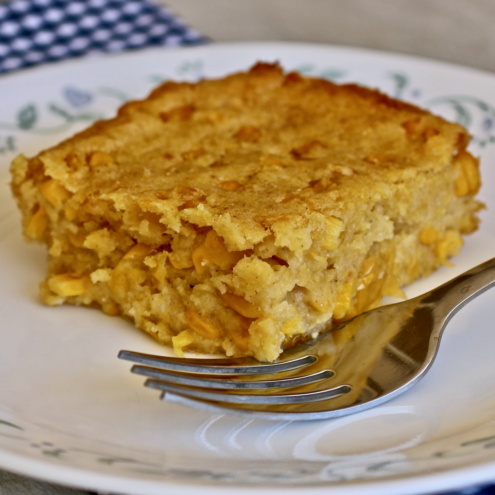

Cornbread Casserole

A delicious serving of cornbread casserole goes great at any holiday meal!
This favorite traditional recipe is a great side dish for the holidays and is so simple anyone can make it!
Ingredients
- 1 box Jiffy cornbread mix
- 1 can whole kernal corn (drained)
- 1 can creamed corn
- 1 stick unsalted butter (melted)
- 1 egg
Directions
- Preheat oven to 350 degrees Farenheit.
- Mix all ingredients together in a large bowl until smooth.
- Grease an 8x8 pan with butter.
- Bake for 45 mins or until toothpick comes out clean.